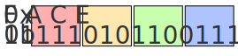
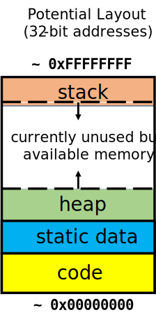

About
CS 449, titled Introduction to Systems Software, is the second course (of three sequential courses) in the University of Pittsburgh's Computer Science "Systems" curriculum. This course follows CS 447 (Computer Organization and Assembly) which focuses on how the CPU works (using MIPS assembly). With a good understanding of how the CPU interacts with the software we write, this course shifts focus on to memory and how each process manages its address space. Once students have a solid foundation on how the hardware interacts with the software, the final course in the three course sequence, CS 1550 (Introduction to Operating Systems), looks at how various abstractions can help ease the user from worrying about the specific hardware details.
Introduction
Most programs today are written using high-level programming languages (such as Java or Python) and many programs merely glue together existing components. However, the best craftsmen are those who understand their tools. For software builders, this means having a solid foundational knowledge of how a computer works internally. CS 449 aims to provide that knowledge by exploring how computers use memory to hold data and instructions, how high level languages abstract from the hardware (with the help of compilers), and how operating systems combine programs and libraries to create running code.
What is Systems?
This course is titled Introduction to Systems Software, but what do we mean by a Systems Software?
Systems is a broad subfield of computer science that deals with the interaction of hardware and software. Typically, a programmer works on top of the layers of abstractions that hide away hardware details. For instance, when we want to display something to the monitor screen, we can use a function like print that is provided by a standard library instead of manipulating the monitor pixel-by-pixel. Similarly, if we were to write to a file, we can utilize the operating system's file system rather than moving the hard disk's write head and changing the magnetic poles manually. These abstractions are designed so that a programmer can focus on software design elements rather than working out the quirks and details of various computer hardware.
However, when studying Systems, we will go beneath the layer of abstractions to explore how they are built/implemented. This will allow us to:
- Better understand how these abstractions work & potentially improve on them
- Design our programs to take advantage of/avoid pitfalls of the hardware quirks
and much more.
The C Programming Language
One of the most useful tools that can help us understand the interaction of hardware and software will be the C programming language. We will use many programs that are written with C (which we can modify), but also use it to write and test our own programs.
C is particularly useful because it provides high-level abstraction of assembly (with its syntax) while maintaining low-level access to memory (through pointers). This direct memory access is crucial for us as it is key to manipulating the CPU and other hardware. Since the CPU fetches instructions from RAM, by making changes to memory content, we are able to control and manipulate the CPU as well as other hardware devices.1
Additionally, many common system-level programs are written in C (or C-like languages). For instance, most operating systems are written in C; and C itself, in fact, was created in 1972 with the purpose of being used in the Unix operating system.2 As such, by learning to use C, we will learn to write and make modifications to the operating system which can further our understanding of how hardware abstractions work. With systems knowledge in one hand and C knowledge in the other, we will be able to ensure that our abstractions do not hurt performance and alleviate design fatigue.3
Why Learn Systems?
Even if you are not a computer (hardware) engineer, Learning how programs interact with the underlying hardware is crucial for any software builder that wishes to write better software (regardless of if you are a 'hardware person'). By the end of this courses, you will be able to:
- make optimizations to make your program more performant
- bypass the abstract interfaces to get the level of control or the performance you need
- fix bugs that come as a result of undefined behavior
- write/modify existing abstract layers such as operating systems or compilers
- debug higher-level programs (The Python interpreter is written in C!)
- and break things for the greater good (remove copy-protection or reverse-engineer programs)!
1 A computer with a CPU that fetches instructions from main memory is said to be of the Von Neumann Architecture.
2 The Linux operating system (which is the most popular of the UNIX-like operating systems) and its device drivers are written mostly in C with over 10 million lines of code.
3 Ensuring that abstractions are performant is a crucial task for any operating system developer. If an operating system's abstraction is slow, the performance of all application that run on that computer system will suffer.
Data Representation
There are more than 6000 different human languages in the world, each with its own standards and rules (namely grammar and vocabulary). As such, if we wanted to talk to another person, we would need to know the standards and rules of whatever language the other person speaks. For instance, to talk to a French person, you would need to know French or vice versa.
Computers, similarly, have their own standards and rules when it comes to communicating. For code, there are hundreds of programming languages that are available; for data, there are thousands of different formats that a computer could use (such as *.txt, *.ppt, and more).
flowchart LR
English --> Human([Human])
Human --> Code/Data
Code/Data --> pc([Computer])
pc --> Binary
However, regardless of what format we use to provide code and data, the computer stores it onto disk/memory by using a special representation called the binary (base-2) numbering system. By encoding and interpreting a set of bits (which is either a 1 or a zero), a computer can determine what that set of bits represent (data) or determine what to do (instructions).
1 https://www.linguisticsociety.org/content/how-many-languages-are-there-world
Binary Number System
A binary number system works just like the familiar base-10 number system (which uses the symbols 0 thru 9) The numbers are written positionally (each position of a digit within the number has meaning) with the most significant digit being written on the left-most side.
For instance, in a base-10 number system, a four digit number \( 2023 \) has the value: \[ 2 \times 10^3 + 0 \times 10^2 + 2 \times 10^1 + 3 \times 10^0 \]
The only difference in the base-2 number system is that the only allowable symbols are 0 and 1. With this requirement, each position of a digit now represents a power of 2. For instance, a four digit number \( 1011 \) has the value: \[1 \times 2^3 + 0 \times 2^2 + 1 \times 2^1 + 1 \times 2^0 \]
Representable Numbers
Notice that, when we had four digits in the traditional base-10 number system, we could represent at most \(10^4 = 10000\) unique numbers. The smallest non-negative number would be \[0000 = 0 \times 10^3 + 0 \times 10^2 + 0 \times 10^1 + 0 \times 10^0 =0 \] and the largest representable number is \[ 9999 = 9 \times 10^3 + 9 \times 10^2 + 9 \times 10^1 + 9 \times 10^0 = 10^4 -1 \]
However, with the binary number system, we can represent at most \(2^4 = 16_{10}\) unique numbers with the smallest non-negative representable number being \[0000 = 0 \times 2^3 + 0 \times 2^2 + 0 \times 2^1 + 0 \times 2^0 =0 \] and the largest representable number being \[1111= 1 \times 2^3 + 1 \times 2^2 + 1 \times 2^1 + 1 \times 2^0 = 2^4 -1 = 15_{10} \]
Generalizing, a \( n \) digit binary number \(d_{n-1} \ldots d_1 d_0 \) has the value: \[d_{n-1} \times 2^{n-1} + \cdots + d_1 \times 2^1 + d_0 \times 2^0 \] Furthermore, with \( n \) binary digits (bits), we can represent \(2^n -1 \) unique digits where the smallest non-negative representable number is \(0 \) and the largest representable number is \(2^n -1\).
| Min | Max |
|---|---|
| \(0\) | \(2^n-1\) |
Base-16 Number System
Because we can only use two symbols in the base-2 numbering system, our bit sequences can easily become too long to write by hand. Hence, we often use a shorthanded base-16 (also called hexadecimal) notation to condense the representation of bits. In this shorthand, we use 16 symbols \( \{1 \ldots 9, A, B, C, D, E, F \} \) where \(0 \) through \(9 \) represent their base-10 counterparts and \(A \) through \(F \) represent 10 through 15.
Notably, this shorthand is very easy to convert to binary and vice versa. All we have to do is, block groups of 4 bits and convert each block to a corresponding hex digit. For example, we can do the following conversion in both directions:

Here, the line at the top (0xFACE) is the hexadecimal representation and the line at the bottom (0b1111 1010 1100 1110) is the binary representation.
Integer Encoding
A computer stores information as a stream of bits (e.g., 0xe29884). But what do those bits actually mean? For that, we need to assign an interpretation to the bit stream.
Unsigned Numbers
One possible interpretation of a stream of bits is as an unsigned number. This is the most simple interpretation of a bit stream, and we read the number (represented in hexadecimal )as follows:
\[\begin{equation} \begin{split} \verb|0xe29884| & = \verb|e| \times 16^5 + 2 \times 16^4 + 9 \times 16^3 + 8 \times 16^2 + 8 \times 16^1 + 4 \times16^0 \\ & = 14 \times 16^5 + 2 \times 16^4 + 9 \times 16^3 + 8 \times 16^2 + 8 \times 16^ 1 + 4 \times 16^0 \\ & = 14680064 + 131072 + 36864 + 2048 + 128 + 4 \\ & = 14850180 \end{split} \end{equation}\]
Similarly, if we want to convert a binary number (e.g., 0b1101) to a decimal number, we’d apply the same process using powers of 2 instead of 16:
\[\begin{equation} \begin{split} \verb|0b1101| & = 1 \times 2^3 + 1 \times 2^2 + 0 \times 2^1 + 1 \times 2^0 \\ & = 2^3 + 2^2 0 + 2^0 \\ & = 8 + 4 + 0 + 1 \\ & = 13 \end{split} \end{equation}\]
Signed Numbers
Another possible interpretation of a hex digit is as an signed number. One of the most common way of representing signed numbers using ones and zeros is called two's complement. In two's complement, the most significant bit (MSb) denotes the sign of a number. For instance, given a 3-bit number:
| Binary Representation | Value |
|---|---|
100 | -4 |
101 | -3 |
110 | -2 |
111 | -1 |
000 | 0 |
001 | 1 |
010 | 2 |
011 | 3 |
we can see that numbers with a 1 in the left-most bit is negative, whereas numbers with a 0 in the left-most bit are positive. We can also see that there is one additional negative number than the positives. That is, \(-4\) does not have a positive counterpart. Two's complement is achieved by:
- Starting with the equivalent positive number.
- Inverting (or flip) all bits – changing every 0 to 1, and every 1 to 0;
- Adding 1 to the entire inverted number, ignoring any overflow
For example, to write \(-3 \) using 4 bits:
- We first write the bit pattern for positive \(3 \implies \verb|0b0010|\).
- We then flips all the bits \( \verb|0b0010| \implies \verb|0b1100|\).
- Finally, we add 1 to get \( \verb|0b1100| + 1 \implies \verb|0b1101|\).
Notice that if we apply the same process for the bit pattern of \( -3 \), we get \(\verb|0b1101| \implies \verb|0b0010| \implies \verb|0b0011| \) which is the bit pattern for positive \( 3\). That is, by applying the process above, we can negate any number in two's complement. Formally, this process can be written as:
\[\begin{equation} \text{Encode}(x) \begin{cases} x & x\geq 0 \\ x + 2^n & x < 0 \end{cases} \\ \text{Decode}(x) \begin{cases} x & x < 2 ^{n-1} \\ x - 2^n & x \geq 2 ^{n-1} \end{cases} \end{equation}\]
Two's complement is useful since arithmetic can be done on numbers of either sign without having to do anything special.
Integer Ranges
We saw that for \(n \)-bit unsigned numbers, the range of representable integers were \(0\) to \(2^n-1\). However, if we are using two's complement signed numbers, the range of representable integers become \(-2^{n-1}\) to \(2^{n-1} -1\) (since there is one more negative number than there are positive numbers). This also means that there is no positive counterpart to \(-2^{n-1}\). In fact, if we attempt to negate this number, we get: \[ -(-2^{n-1})=-(\verb|0b100|\ldots\verb|0|)=\verb|0b011|\ldots\verb|1|+1=\verb|0b100|\ldots\verb|0| = -2^{n-1} \]
Overflow
We know that for \(n \)-bit signed numbers, the largest representable integer is \(2^{n-1}-1\). But, what happens when we try to add \(1\) to this number?
Consider \(\verb|0b0111| \), a 4-bit signed number, whose value is 7. If we try adding 1 to this number, we get: \[ 7+1=\verb|0b0111| + 1 = \verb|0b1000|=-8 \] This is an example of an integer overflow which occurs when an arithmetic operation attempts to create a numeric value that is outside of the range that can be represented with a given number of digits. Integer overflows can occur in either direction:
- When an addition produces a value that is higher than the maximum representable value.
- When a subtraction produces a value that is lower than the minimum representable value.
Integer overflows are a common source of undefined behavior and can often lead to bugs in programs. Hence, detecting overflow is a crucial task for programmers.
An overflow occurs when the value affects the sign:
- If adding two positive numbers yields a negative result, an overflow occurred.
- If subtracting two negative number yields a positive result, an overflow occurred.
- If subtracting a negative number from a positive number yields a negative result, an overflow occurred.
- If subtracting a positive number from a negative number yields a positive result, an overflow occurred.
- An overflow cannot occur when subtracting two numbers of the same sign.
- An overflow cannot occur when adding two numbers of opposing signs.
Integers in C
In Java, integers were signed variables which used the two's complement interpretation. This meant that variables could hold values from \(-2^{n-1} \) to \(2^{n-1} -1\) where \(n\) is given by the variable type.
| Integer Types | size |
|---|---|
| byte | 8 bits |
| short | 16 bits |
| int | 32 bits |
| long | 64 bits |
In C, variables can be declared as either signed or unsigned. This means that any variable declared as unsigned can hold values from \(0\) to \(2^n -1\) and variables declared as signed can hold values from \(-2^{n-1}\) to \(2^{n -1}-1\).1
The \(n\), like in Java, is given by the variable type. A typical 64-bit machine will have variable sizes as such:
| Integer Types | size |
|---|---|
| char | 8 bits |
| short int | 16 bits |
| int | 32 bits |
| long int | 64 bits |
However, these sizes are architecture-dependent and can vary from machine to machine. As such, the C standard library provides constants which can help define the ranges of each variables.
#include <limits.h> // for INT_MAX, UNIT_MAX
#include <stdio.h> // for printf()
int main()
{
printf("%d", INT_MAX); // prints 2147483647
printf("%d", UINT_MAX); // prints 4294967295
return 0;
}
Additionally, the sizeof operator (built in to C) allows us the ability to programmatically obtain the byte size of data.
#include <stdio.h> // for printf()
int main()
{
printf("%d", sizeof(int)); // prints 4 (= 32b) on a typical 64-bit machine
long long_var = 0;
printf("%d", sizeof(long_var)); // prints 8 (= 64b) on a typical 64-bit machine
return 0;
}
Integer Casting
In C, like in many other programming languages, we can cast2 variables to another type. In addition, C lets us move a value from an unsigned integer variable to a signed integer variable (and vice versa).
int sx, sy;
unsigned ux, uy;
sx = (int) ux;
uy = (unsigned) sy;
When we cast a variable from signed to unsigned (or unsigned to signed), the underlying bit pattern is not changed, but the interpretation of the bit pattern is. This becomes troublesome when a cast results in a interpretation that is not valid. Even if the resulting interpretation is invalid, your program will still cast anyway. This is called coercion.
#include <stdio.h>
#include <limits.h>
int main()
{
int i = -1;
unsigned u = (unsigned) i;
printf("i=%d, u=%u\n", i, u);
return 0;
} // Output: i=-1, u=4294967295
Since C ignore the obvious invalid operations this is sometimes referred to as "weak" typing.3
In addition to the explicit casts (like the one above), we can also implicitly cast between variables through assignments and procedure calls:
sx = ux;
uy= sy;
int (fun unsigned u);
uy = fun(sx);
By default, integer literals (constants) are considered to be signed integers. If we were to explicitly force them to be unsigned, we can suffix a "U" or "u" to the literal like: 0U, 4294967259u.
Lastly, when we mix an unsigned and signed variable in a single expression (including comparison operators), signed values are implicitly cast to unsigned values.
1 Two's complement is not strictly mandated by the C language. However, most machines use it to store and represent signed integers.
2 Moving values between different type is called casting.
3 The strong/weak terminology has had very fragile definitions over the years and are arguably useless in our context. Hence, we will ignore them.
Floating Point Numbers
C Guarantees Two Levels • float single precision • double double precision • Conversions/Casting • Casting between int, float, and double changes bit representation • double/float → int • Truncates fractional part • Like rounding toward zero • Not defined when out of range or NaN: Generally sets to TMin • int → double • Exact conversion, as long as int has ≤ 53 bit word size • int → float • Will round according to rounding mode • Systems don’t usually use floats! :whew: • Floats also suffer from the fixed number of bits available to represent them • Can get overflow/underflow • “Gaps” produced in representable numbers means we can lose precision, unlike ints • Some “simple fractions” have no exact representation (e.g. 0.2) • “Every operation gets a slightly wrong result” • Floating point arithmetic not associative or distributive • Mathematically equivalent ways of writing an expression may compute different results • Never test floating point values for exact equality! • Careful when converting between ints and floats
The C Programming Language
C is not a “very high-level” language, nor a “big” one, and is not specialized to any particular area of application. But its absence of restrictions and its generality make it more convenient and effective for many tasks than supposedly more powerful languages.
— Kernighan & Ritchie
Compiling C Programs
Unlike Java (which uses the Java Virtual Machine) and Python (which uses an interpreter), C is a compiled language. C source code is generally converted into machine code which can run directly on the CPU. The difference is in a trade-off about when and how to create a machine-level representation of the source code.
Generally, a C compiler will typically convert a *.c source file into an intermediate *.o object file. Then, a linker will link these together to form an actually executable.
flowchart LR
code([Source Code]) --> Compiler
Compiler --> asm([Assembly Code])
asm --> Assembler
Assembler --> m([Machine Code])
m --> Linker
Linker --> exe([Executable])
Later, we will look at each of the phases to compiling a C program. For now, we can consider the compiler as a program that simply takes the C source code and translates it into a machine-code executable.
Compilation vs Interpretation
In a compiled language, like C, the source code is translated prior to run-time (during compilation) into a format that can be executed directly on the hardware. This, alongside various compiler optimization techniques, mean that compiled languages can run very fast. However, since each program needs to be translated to its respective architecture's machine code, to move a program from one machine to another, may require recompilation of the source code.
In an interpreted language, like Python, the source code is executed as it is read by a interpreter program (which is often written in some other language) and translated into machine code line-by-line. Because of this, interpreted languages do not rely on the hardware as long as the appropriate interpreter is installed on the target system. However, since the source code needs to be translated at run-time, interpreted languages are often much slower than compiled languages.
Another approach for languages is to use both an interpreter and a compiler.Java can be considered both a compiled and an interpreted language because its source code is first compiled into a binary byte-code. Byte code is a pseudo-architecture in that there are no real hardware that can run byte code. Instead, a type of virtual machine (like the Java Virtual Machine) simulates the byte-code architecture and the byte-code is translated into machine code periodically. This is a type of delayed compilation called Just-In-Time compilation. Just-In-Time compilation is a compromise to both approaches (compiler/interpreter) and it is surprisingly competitive in its execution speed.
The C Syntax (Part I)
C Dialects
C is a very old language. Because of this, there are a lot of different styles of C in the world. Luckily, throughout the many standard revisions, the syntax has changed very little. However, newer C standards (or versions) support additional features. As such, we can declare the C version explicitly when we compile using the -std flag like:
# For C versions later than C99
gcc -std=c99 source.c
# For C389 (ANSI/ISO C)
gcc -ansi -–Wpedantic source.c
The main versions of C are:
- C89 (ANSI/ISO C) which is the original C standard
- C99 (released 1999) which adds 'complex' numbers and single-line comments
- C11 (released 2011) which standardizes Unicode and supports newer threading libraries (for better parallelism)
- C18 (released 2018) which makes minor refinements to C11
For us, we will more or less focus on the C99 standard in this course.
Learning C as a Java Programmer
Unlike Java which is a Object-Oriented language, C is a procedural language. This means that C code specifies a series of well-structured steps and procedure instead of encapsulating functions and data into classes (or abstract data types). Consequently, the basic programming unit in C is a function.
Additionally, as we have discussed before, compilation of C program requires a compiler (like gcc) which can translate the source code into machine language code. In contrast, Java code uses a compiler (javac) that translates source code into Java virtual machine language bytecode.
# Compiling a C program using gcc
gcc source.c
# Compiling a Java program using javac
javac source.c
As such, Java programs require a bytecode interpreter whereas C programs can be loaded directly on the underlying hardware
# Execute a compiled C executable
./a.out
# Execute a compiled Java executable
java prog
One of the more interesting feature of C is its capacity to directly access memory. In Java, memory management is done automatically with memory being allocated with the new keyword and the garbage collector automatically freeing memory when the object loses its reference. In C, however, memory allocation must be done manually using the malloc() function and freed using the free() function.
Syntax wise, C supports the same single line comments (//...) and multi-line comments (/* ... */) just like in Java. Constants, on the other hand, can be defined using the #define macro or the const keyword. In comparison, Java uses the final keyword. The macros (defined using #define) are filled in using text-replacement by the preprocessor prior to compilation. In Java, there is no equivalent preprocessor.
Furthermore, like in Java, variables need to be declared before being used. However, in older versions of C (mainly those before C99), variables need to be declared at the top of the file. In fact, it is still common practice to declare variable and function names at the top of the file. When declaring variables, the common convention is to use snake_case.1
Lastly, to access an external library, we can use the #include preprocessor directive with the appropriate header file like:
#include <stdio.h>
Header files are simply text files which contain the names of the functions in the external library. The angle brackets (< >) tell the preprocessor to look for the file in the location of the system's standard library. If instead, we were using a custom (non-standard) library, we would need to use quotation marks and explicitly state the path to the header file like:
#include "path/to/header.h"
| C | Java | |
|---|---|---|
| Language Type | Procedural | Object Oriented |
| Programming Unit | Functions | Classes (Abstract Data Types) |
| Compilation | gcc source.c creates a machine language code | javac source.java creates a Java virtual machine language bytecode |
| Execution | ./a.out loads and executes the program | java prog runs the JVM which interprets the bytecode |
| Memory Management | Manual using malloc() and free() | Automatic using the new keyword and the garbage collector |
| Comments | // single line comments and /* multi-line comments */ | // single line comments and /* multi-line comments */ |
| Variable Declaration | Before using it (additional restrictions with older versions of C) | Before using it |
| Variable Naming Conventions | snake_case | camelCase |
| Accessing a Library | #include <stdio.h> | import java.io.File; |
Hello, World! C Edition
It’s traditional when learning a new language to write a little program that prints the text Hello, world! to the screen, so we’ll do the same here.
Because C maintains a low-level access to hardware, some of its details (like the size of an
int) is hardware dependent. For this course, we will be using a 64-bit machine running the latest version of Linux to run, compile, and test all code. For compilation, we will usegccor the GNU compiler collection.
We'll start by making a new source file called hello.c (C source files end with the .c extension). Now, open the hello.c and enter the code below:
// File includes must states at the top of the file
#include <stdio.h>
int main(void)
{
printf("Hello, World!\n");
return 0;
}
Save the file and open the terminal in the working directory. On the terminal, enter the following commands to compile and run the file:
$ gcc -Wall hello.c -o hello
$ ./hello
Hello, World!
Anatomy of a C Program
Let's now dissect the code we've written. Here's the first piece of the puzzle:
int main(void){
}
These lines define a function named main. The main function is special: it is always the first code that runs in every C program. Here, the first line declares a function named main that has no parameters and returns an int. If there were parameters, they would go inside the parentheses (). The int return value indicates whether a function executed successfully. T
Next, the function body is wrapped in {} and holds the following code:
println("Hello, world! \n");
This line does all the work in this little program: it prints text to the screen. The rules for the string argument is similar to Java. For instance, the \n denotes a newline and \t denotes a tab.
Using External Libraries
Notice however, that we are calling the printf function without every declaring it in our program. This is because the printf function is part of the C standard library. We can use functions that are defined elsewhere as long as we inform the compiler as such.
The very first line in our program has the #include statement.
#include <stdio.h>
This line tells the C preprocessor to copy over the contents of the stdio.h file into the hello.c source file (essentially performing a text-replacement). Now,
if we move into into the directory where the standard library is installed and examine the stdio.h file, we will find the declaration for the printf function which looks something like:
int printf(const char* format, ...);
There are n important details to notice here:
First, the stdio.h header file does not contain the implementation for the printf function; only the function signature is given. The actual code (implementation) for printf() is defined elsewhere and is linked when our source code goes through the compiler. We will learn what linking means later in the course. The function signature is here only to tell the compiler that a function which matches this signature does in fact exists. This is a crucial line because in C, everything (including functions) must be declared before being used.
Second, the function signature indicates that the printf function returns an int. It is common practice to return an integer value to indicate whether a function has succeeded. Typically, a return value of zero is considered to be "successful".
Third, the function signature indicates that printf accepts a memory address of an "array of const chars" and a variable number of additional arguments (indicated by the ...). The character array is equivalent to a string in C and the optional additional arguments are used to pass in values that can replace the placeholder (like %d) in the string.
Fourth, we end the line with a semicolon (;), which indicates that this expression is over and the next one is ready to begin. Most lines of C code end with a semicolon.
The C Syntax (Part II)
Now that we've made our first C program, let's discuss some other common features of C.
Declaring Variables + Integers & Casting (Revisited)
Just like in Java, variables are declared within functions (generally towards the top of the file/function). The type is followed by the name like
int n;
and we can initialize them using =
n = 5;
int n = 5; // Declare and initialize in one line!
However, unlike Java, when variables are not initialized, their values are considered arbitrary. Technically, the variables are assigned a memory address when they are declared; Before initializing the variable, if we try to read it, they will yield whatever value happens to be at that memory address (no matter how non-sensical it is).
Furthermore, as we have discussed before, we can cast variables (both explicitly and implicitly). For instance, we can implicitly cast values when we initialize the variable like
int n = -50000;
Here, the literal -50000 is coerced into an int type. In fact, we can coerce the values like this no matter how much nonsense it might be:
char smaller = n;
Additionally, we can explicitly cast the value as well:
unsigned int non_sense = (unsigned int) n;
Memory Management
There are two components that are core to any modern computer system: (1) CPU and (2) Memory. The central processing unit (CPU, or processor) is the hardware inside the computer that actually executes program instructions using data. Memory (RAM, or Random Access Memory) is the piece(es) of hardware that store the program that stores the program instructions and data.
We can look at memory as a continuous series of bits that are logically blocked into chunks. These chunks are often byte-sized (8 bits) or word-sized depending on the hardware architecture. However, we will focus on the byte-sized (or byte-addressable) memory. In this scheme, individual bytes in memory can be accessed with a unique address. These addresses index the memory (the first byte would have address 0x00000000, the next byte 0x00000001, and so on) which makes it easy to read arbitrary parts of memory easily (hence the random-access).
In a byte-addressable scheme, the minimal unit of memory is a byte. Hence, if we wanted to read 4 bits from memory, we would have to get the address of the corresponding byte (that contains those 4 bits), read the memory, and use masking and shifting to isolate the bits.
The C Memory Model
In a C program, the two main parts of program is code (also called text) and data. Effective memory management is to figure out how to lay these two components onto memory.
Let's look at an example program:
int my_static_var = 1;
int factorial(int n)
{
if (n <= 1) return my_static_var;
return n * factorial(n - 1);
}
void main(void)
{
factorial(5);
}

The two lines that are inside the factorial function and the line that is inside the main function are the code.
// from factorial(int n)
if (n <= 1) return my_static_var;
return n * factorial(n - 1);
// from main(void)
factorial(5);
The code has a few known properties:
- The code is not likely to change during run-time. 1
- The code must be loaded into RAM before a program can begin to execute.
The very first line of our program is called static data.
int my_static_var = 1;
Static data is often overlooked, but very useful component of data. Static data (or static variables) lives outside of any function in our program, and can be accessed by any of them. Static data also has some properties which are:
- Contrary to its name, it can change
- The variable's size is fixed
- Static data must be loaded into RAM before a program can begin to execute.
Lastly, the stack is a space for temporary dynamic data. The stack holds temporary variables and function arguments like:
/*int factorial(*/ int n //)
/*factorial(*/ n - 1 //);
Space for these variables are allocated when a function is called and they are freed (or popped) when a function returns. As more functions are called, the stack grows downward (and lower addresses are allocated); as functions return, the stack reduces back upwards. 2
Heap
1 umm actually no.